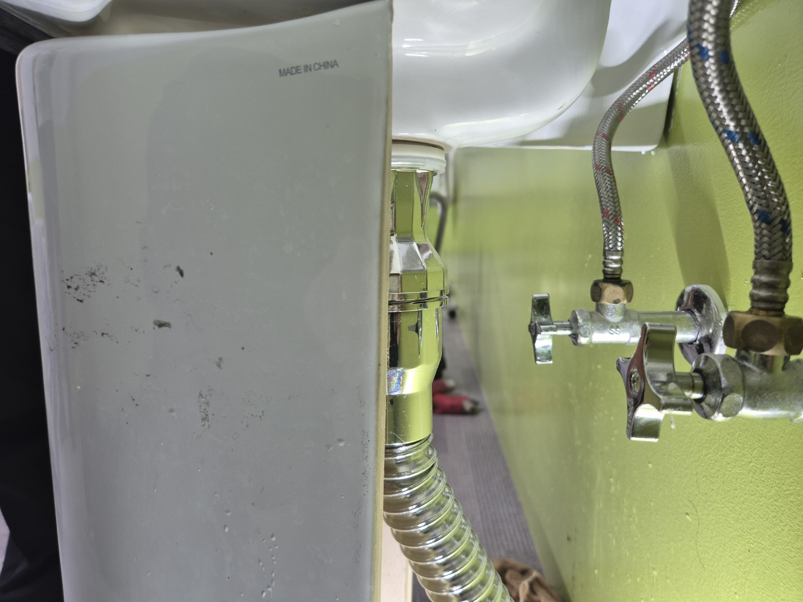
안녕하세요.. 고고고 설비입니다.. 오늘은 평택시 비전동에 있는 병원에서 세면대 부속이 낡아 문제가 생기고, 화장실 바닥 배수구까지 막혔다는 신고를 받고 다녀온 현장입니다.
아이들이 많이 오가는 병동이라 그런지 아기자기하게 꾸며진 화장실이었어요. 세면대 아래쪽 밸브와 배관 상태부터 하나씩 확인했는데, 물이 새는 흔적이 이미 바닥까지 번져있는 상태였습니다.
세면대 배수 마개 부속이 오래돼서 헐거워진 상태였는데, 옆에서 관계자분이 지켜보시는 가운데 부속을 새것으로 교체하기로 했습니다.
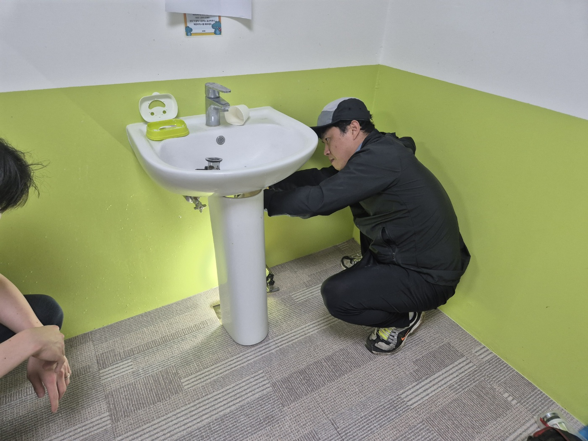
빼낸 부속을 보니 금속 부분이 시커멓게 부식되고 군데군데 구멍까지 나 있었어요.. 이 정도면 진작 새는 게 이상하지 않은 상태였습니다.
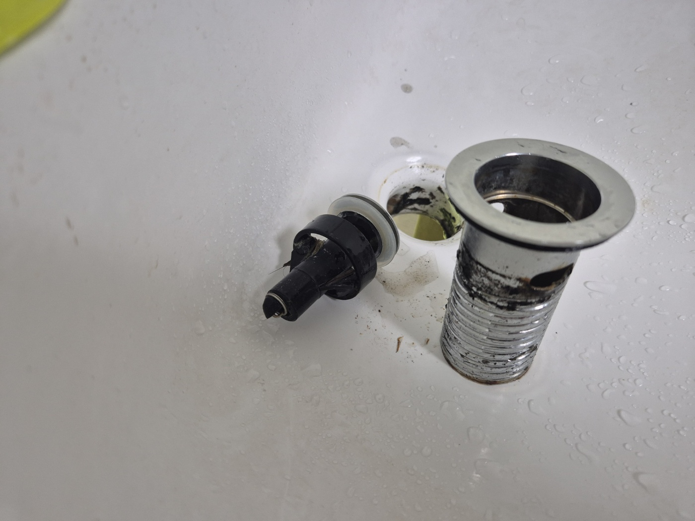
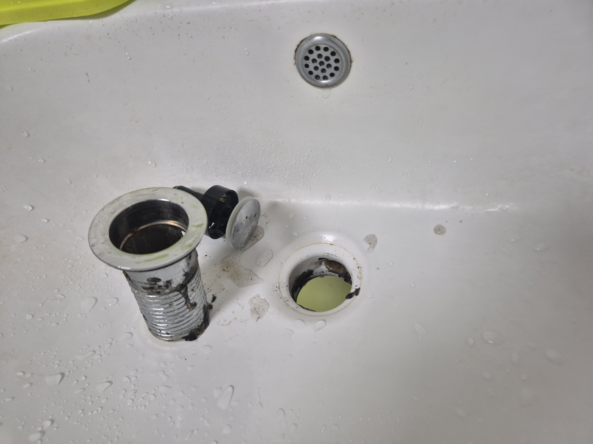
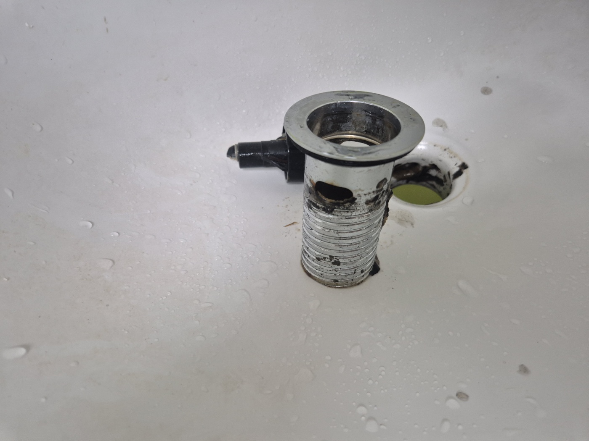
세면대 작업을 마치고 화장실 바닥 배수구도 같이 봐달라는 요청이 있었어요. 뚜껑을 열어보니 과자 봉지 은박지 같은 이물질이랑 머리카락이 잔뜩 엉켜있었습니다.. 아이들이 많이 오가는 곳이라 그런지 이물질 종류도 다양했어요.
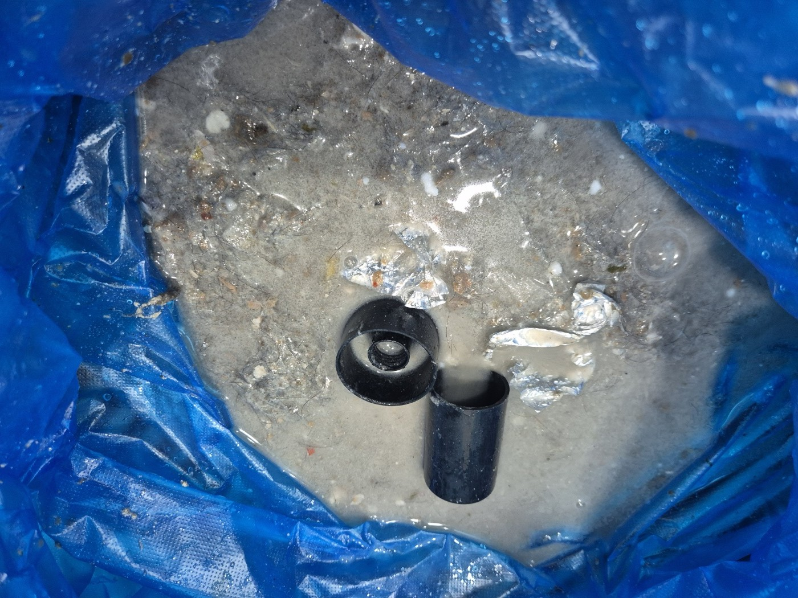
손으로 집어보니 안쪽 이음부까지 끈적하게 뭉쳐있어서, 단순히 걷어내는 것만으로는 부족한 상태였어요.
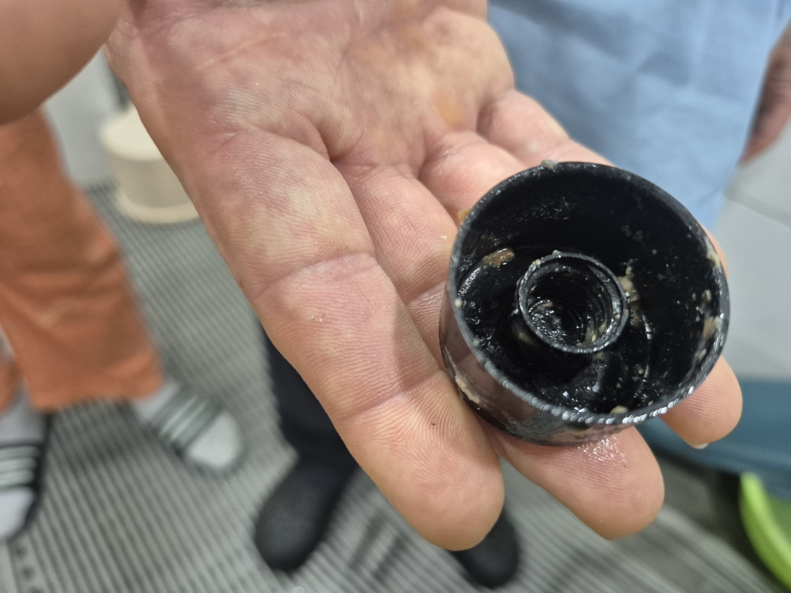
대형 석션기를 끌고 와서 바닥 배수구 안쪽에 고여있던 오수와 찌꺼기를 흡입했습니다. 호스를 몇 번 넣었다 빼기를 반복하며 구석구석 훑어냈고, 빠질 때마다 이물질이 계속 딸려 나와서 예상보다 시간이 좀 걸렸어요.
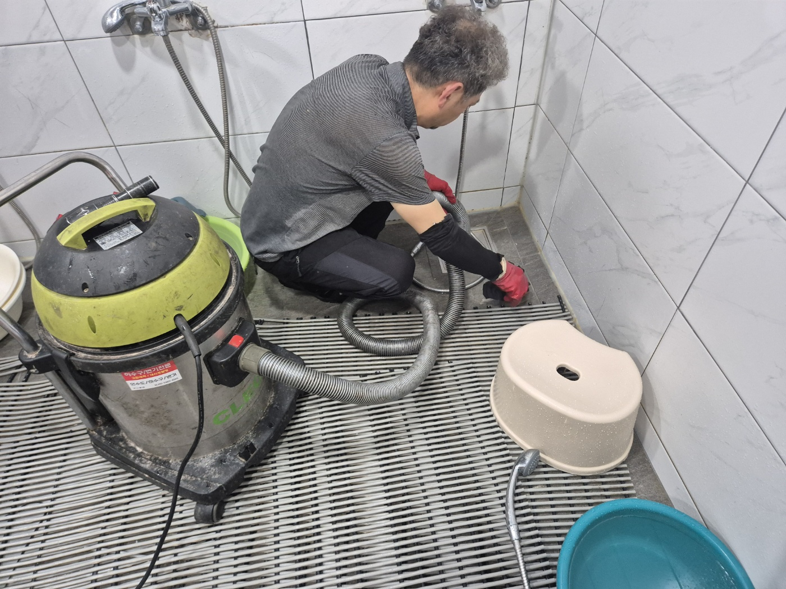
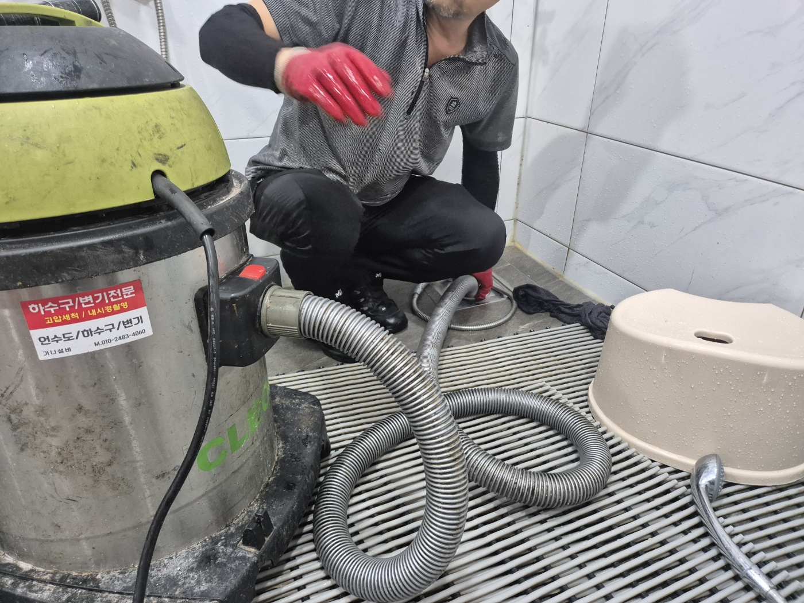
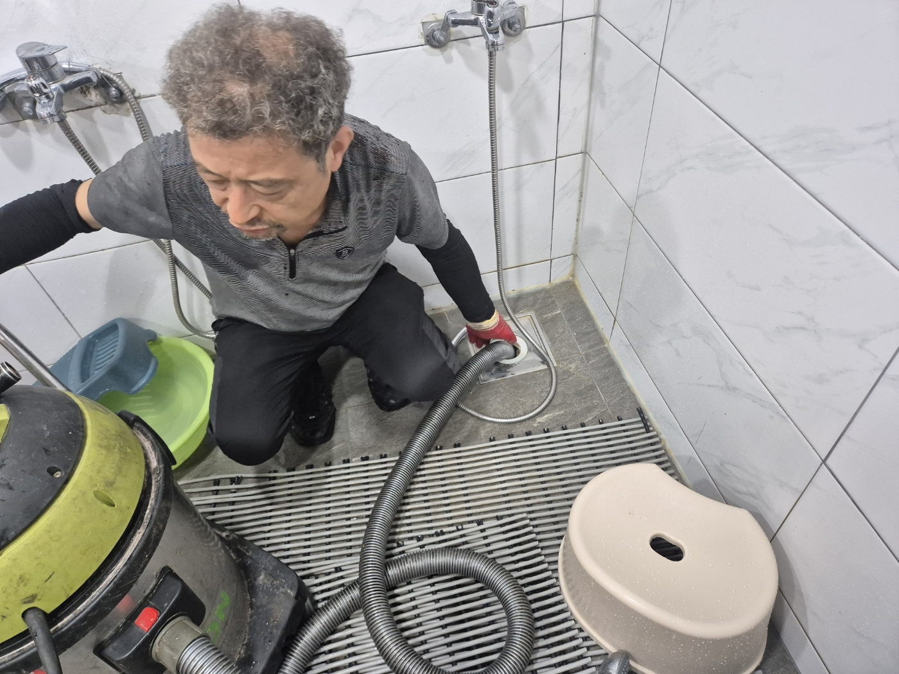
작업을 마치고 샤워기로 물을 흘려보내며 배수 상태를 확인했습니다. 처음엔 느리게 빠지던 물이 이제는 시원하게 빠지는 걸 확인하고 나서야 마무리했어요.
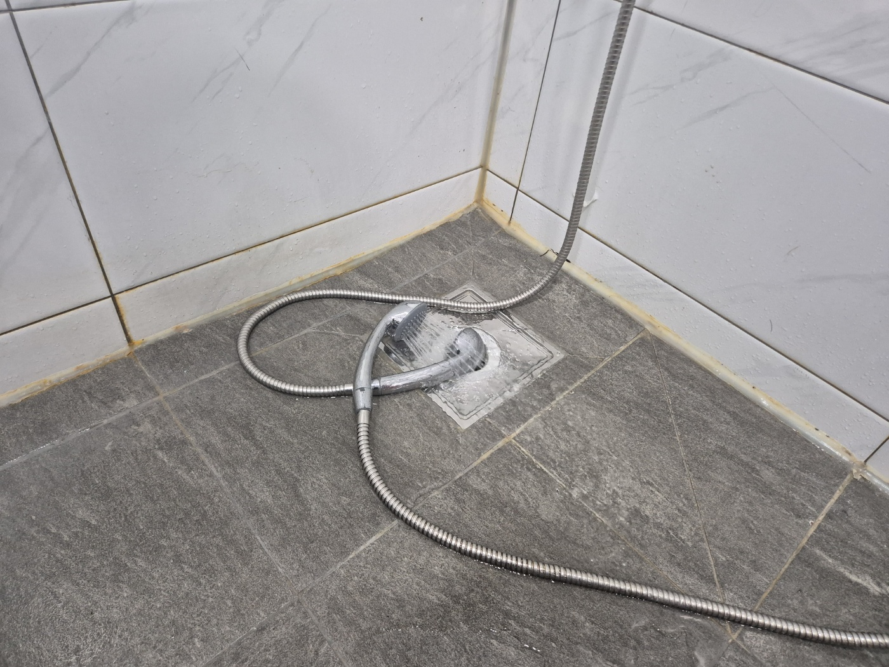
병원처럼 여러 사람이 함께 쓰는 화장실은 작은 이물질도 금방 쌓이기 쉬운 만큼, 세면대 부속과 바닥 배수구 모두 정기적으로 점검해주시는 걸 권해드립니다.
고고고 설비는 주택, 아파트, 원룸, 상가, 공장의 생활 하수 오수 배관을 관리해 주는 업체입니다. 고고고 설비에 전화 주시면 친절상담 정확한 진단 확실한 해결로 보답해 드리겠습니다!!